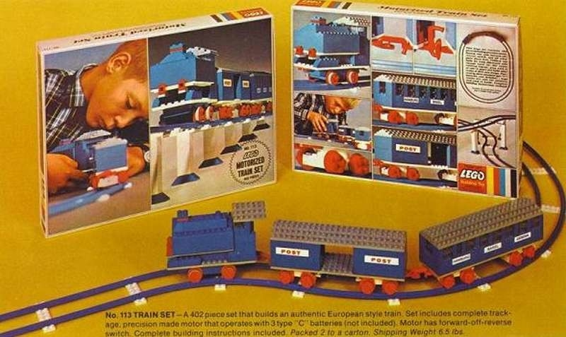

Lego bestaat nu al meer dan 90 jaar, het begon allemaal in het Deense stadje Billund. Daar was Ole Kirk Christiansen begonnen met een houtbewerkingszaakje. Daar maakte hij speelgoed van hout, maar ook bedacht hij de naam LEGO wat is afgeleid van de Deense woorden Leg Godt (speel goed).
Na de tweede wereld oorlog ging hij aan de slag met het maken van kunststof speelgoed. Vanaf 1961 gingen ze ook kunststof wielen maken waardoor de mogelijkheden steeds groter werden. Een aantal jaar later in 1969 werd dubplo op de markt gebracht. In 1977 ontstond LEGO technic, daarmee kwamen veel nieuwe mogelijkheden bij kijken, dit was ook het begin van de LEGO-mindstorm serie.
Afgelopen jaren hebben ze veel jublieums gehad, namelijk de 50 en 60 jarige bestaan van de plastic blokjes, en het 90 jaar bestaan van de houten speel blokken. Daarvoor hebben ze oude set opnieuw uitgebracht op de markt zo kon je voor het 50 jarig jublieum minifigs kopen van bekende popsterren en veranderde google zijn logo in een LEGO thema. Bij hun 60ste verjaardag hebben ze set opnieuw uitgebracht, zoals de trein uit 1966. 